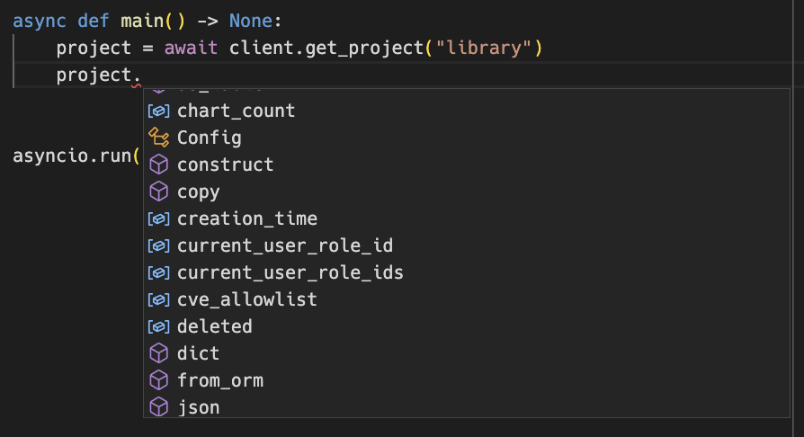
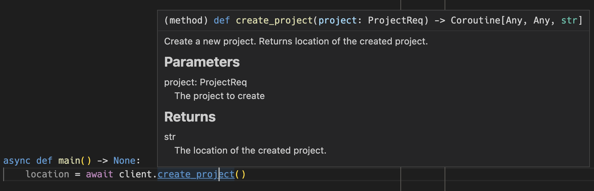
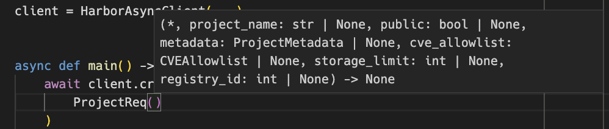
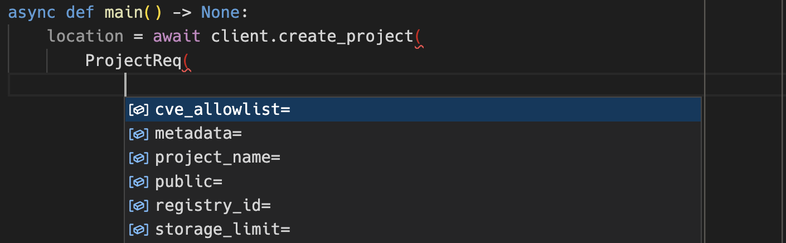
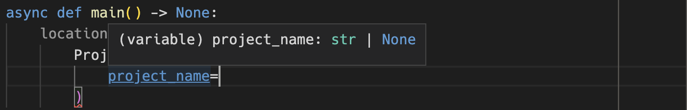
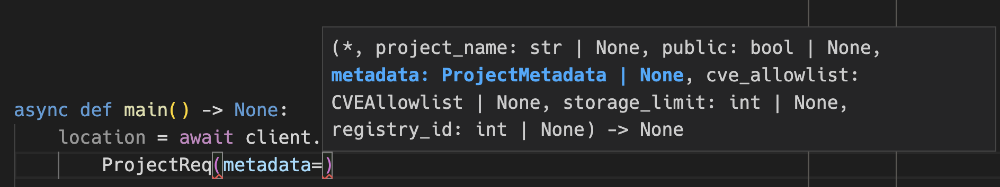
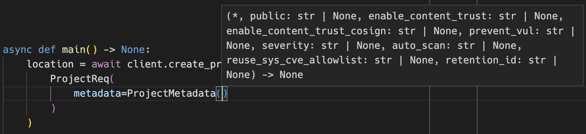

Models
Most client methods either return a Pydantic model or take one as an argument. You don't need to know anything about Pydantic to use the models, but it's a good idea to familiarize yourself with the basics through the Pydantic v1.x docs to get the most out of the library.
All models are located in the harborapi.models module.
Pydantic models
Through the Pydantic models, we get a lot of nice features for free, such as:
- Validation of data
- Automatic conversion of data types
- Utility functions for (de)serializing data
We'll look at some of these features later, but first, let's look at how the models are used at a basic level.
Using models returned by the API
When calling a GET endpoint with a get_* method, we usually get a model instance back. For example, when calling the get_project method, we get a Project instance back:
import asyncio
from harborapi import HarborAsyncClient
client = HarborAsyncClient(...)
async def main() -> None:
project = await client.get_project("library")
asyncio.run(main())
In the IDE, we can see the various attributes the model instance has:

Also shown in the screenshot are the utility methods json and dict, which allows you to convert models to JSON and Python dictionaries, respectively.
Using models to create and update resources
Similar to how the get_* methods return models, the create_* and update_* methods take models as arguments. For example, the create_projectmethod takes a ProjectReq model as an argument:
import asyncio
from harborapi import HarborAsyncClient
from harborapi.models import ProjectReq, ProjectMetadata
client = HarborAsyncClient(...)
async def main() -> None:
location = await client.create_project(
ProjectReq(
project_name="test-project",
public=True,
metadata=ProjectMetadata(
auto_scan=True,
enable_content_trust=True,
),
)
)
print(location)
asyncio.run(main())
IDE autocompletion
When using the models, the IDE can help us out by showing us the available fields and their types. For example, when calling the create_project method, we know we need to pass a model to the method.
The IDE tells us the name of the model to pass to the method:

Since we know all models can be imported from harborapi.models, all we have to do is to add:
Again, we are assisted by the IDE when creating the model instance we pass to the method:

We get IDE autocompletion for the different fields when constructing the model instance:

When assigning a value to a field, we can see the type of the field:

Certain models contain fields that are of a different model type. For example, the ProjectReq model has a field named metadata which expects a ProjectMetadata instance. When assigning a value to such a field, we can see the type of the field:

First we need to import the model we want to use:
After which, the IDE will help us construct the model instance:

The IDE used for demonstration (VSCode) does not show the Pydantic model field descriptions, however. So it's recommended to always check the documentation to gain a more complete understanding of the models:
Unfortunately, the documentation does not yet generate clickable links to other models referenced in a model's field type, so you'll have to search for the model name in the sidebar or use the search field if a field type is not immediately clear to you. CTRL+F is your friend.
Model validation
Pydantic models validate the data they are given. This can take the form of checking that a given argument is of the correct type, or that it is within a certain range of values. Other validation methods include checking that a string matches a certain regular expression, or it is a valid URL, or is of a certain length. See the Pydantic docs for more information. The Data validation page also contains more in-depth information about validation.
Validation
When we fetch data from the API, it is validated through the models. For example, when we call the get_project method, we get a Project instance back. The model provides certain guarantees about the type of the data it contains. For example, the project_id field is guaranteed to be an int or None:
class Project(BaseModel):
project_id: Optional[int] = Field(None, description="Project ID")
Meaning that when we access the project_id field, we can be sure it is an int or None:
project = await client.get_project("library")
if project.project_id is not None:
new_id = project.project_id + 1 # Guaranteed to be an int
This guards against unexpected values returned by the API, and it allows us to write code that is more robust. Furtermore, should the API change in the future, the validation will fail and we will get an error. This is a good thing, as it allows us to catch breaking changes early. If you need to use a method that return a model that fails validation, you can use the no_validation() context manager to disable validation for that specific request.
Type coercion
Fields will generally attempt to coerce a value to its target type if possible. By default, the ProjectReq.registry_id field expects an int argument:
>>> from harborapi.models import ProjectReq
>>> ProjectReq(registry_id="123")
ProjectReq(..., registry_id=123)
However, Pydantic provides some leniency with regards to types that fields accept as inputs, so we can pass in not only an int, but also a str, which is then converted to an int:
str fields such as project_name cannot convert int to str, however, so if we try to pass an integer value to the field, we get an error:
>>> ProjectReq(project_name=123)
Traceback (most recent call last):
File "<stdin>", line 1, in <module>
File "/Users/pederhan/Library/Application Support/hatch/env/virtual/harborapi/Utij2nsk/harborapi/lib/python3.10/site-packages/pydantic/main.py", line 164, in __init__
__pydantic_self__.__pydantic_validator__.validate_python(data, self_instance=__pydantic_self__)
pydantic_core._pydantic_core.ValidationError: 1 validation error for ProjectReq
project_name
Input should be a valid string [type=string_type, input_value=123, input_type=int]
For further information visit https://errors.pydantic.dev/2.4/v/string_type
The same goes for passing arbitrary objects:
>>> ProjectReq(project_name=object())
Traceback (most recent call last):
File "<stdin>", line 1, in <module>
File "/Users/pederhan/Library/Application Support/hatch/env/virtual/harborapi/Utij2nsk/harborapi/lib/python3.10/site-packages/pydantic/main.py", line 164, in __init__
__pydantic_self__.__pydantic_validator__.validate_python(data, self_instance=__pydantic_self__)
pydantic_core._pydantic_core.ValidationError: 1 validation error for ProjectReq
project_name
Input should be a valid string [type=string_type, input_value=<object object at 0x1047fa280>, input_type=object]
For further information visit https://errors.pydantic.dev/2.4/v/string_type
See the Pydantic docs on standard library types for more information about how coercion works.
String fields with 'true' and 'false' values in API spec
Info
This section only refers to the ProjectMetadata model. The other models are not affected by this as of Harbor API schema version 403b616
For some reason, some model fields in the API spec that by all accounts should have been bools are actually string fields that accept 'true' and 'false'.
# ...
ProjectMetadata:
type: object
properties:
public:
type: string
description: 'The public status of the project. The valid values are "true", "false".'
This only affects the ProjectMetadata model, which contains a whopping 6 fields following this pattern:
publicenable_content_trustenable_content_trust_cosignprevent_vulauto_scanreuse_sys_cve_allowlist
For compatibility with the API, the type of these fields in the model have not been changed to bool. When you access these fields, their value will be one of the strings 'true' or 'false':
project = await client.get_project("test-project")
assert project.metadata.public in ["true", "false"]
However, you can instantiate these fields with bools, and they will be converted to the appropriate strings once the model is created:
>>> from harborapi.models import ProjectMetadata
>>> ProjectMetadata(
public=False,
enable_content_trust=True,
)
ProjectMetadata(public='false', enable_content_trust='true', enable_content_trust_cosign=None, prevent_vul=None, severity=None, auto_scan=None, reuse_sys_cve_allowlist=None, retention_id=None)
With the model's custom field validator, the arguments are coerced into the strings 'true' and 'false'. This maintains compatibility with the API while allowing you to use bools in your code.
So in general, when you assign to these fields, you don't need to think about this at all. Just use bools as you normally would:
>>> metadata = ProjectMetadata()
>>> metadata.public = True
>>> metadata.enable_content_trust = False
>>> metadata
ProjectMetadata(public='true', enable_content_trust='false', enable_content_trust_cosign=None, prevent_vul=None, severity=None, auto_scan=None, reuse_sys_cve_allowlist=None, retention_id=None)
However, when you access them, you need to be aware that they are strings:
project = await client.get_project("test-project")
if project.metadata.public: # WRONG - will match 'false' too
print("Project is public")
if project.metadata.public == "true": # CORRECT
print("Project is public")
This is an inconvenient API and very unpythonic, but it's the best we can do1 without breaking compatibility with the Harbor API.
Author's note
It was decided to keep the offending fields as strings to maintain consistency with the API spec and avoid obscure bugs stemming from improper (de)serialization and validation.
It's probably also a good idea to keep the models as close to the API spec as possible, so that the library doesn't diverge too much from the spec over time. There are, after all, a lot of endpoints and models to keep track of.
-
With the introduction of custom model serializers in Pydantic V2, we could convert the values to bools in Python, while still serializing them as strings in JSON format. However, this breaks compatibility with previous versions of
harborapi, and would likely just lead to more confusion among users. ↩